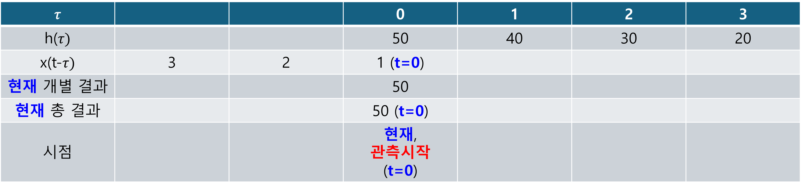
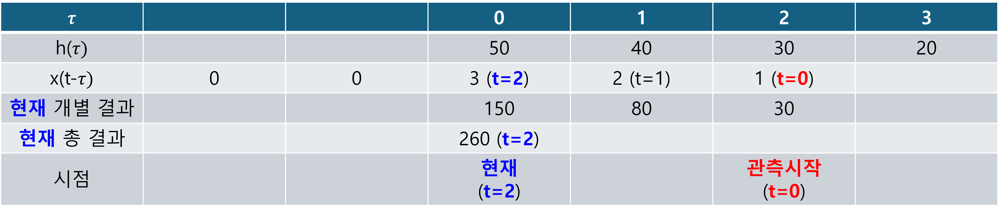
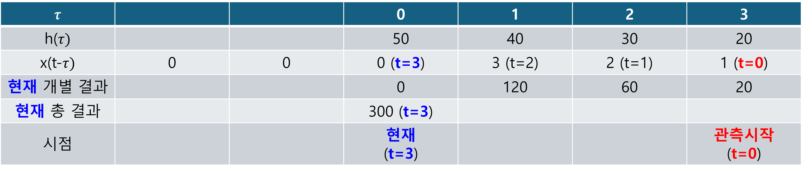
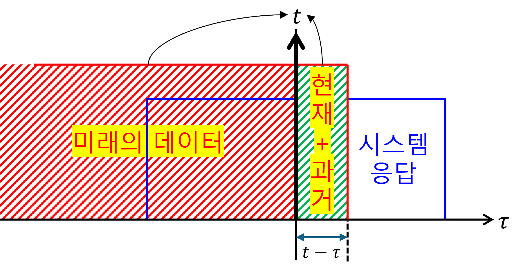

(b) Convolution
1. Convolution
- (이전입력+현재입력+미래입력)의 현재상태: convolution for LSI + non-causal
- (이전입력+현재입력)의 현재상태: convolution for LSI + causal
2. 숫자(리스트)와 그림으로 이해하는 컨볼루션





수학적으로 표현(절차)하면, 다음과 같다.
(1) 시간에 대한 시스템 응답을, 리스트화 한다.
$$ h\left(t\right)\rightarrow h\left(\tau\right) $$(2) input을, 리스트화 한다. 그 다음, 처음 intput이 시스템에 들어가야 하므로 filp 시킨다.
$$ x\left(t\right)\rightarrow x\left(\tau\right)\rightarrow x\left(-\tau\right) $$(3) 리스트화 된 input을 시간에 따라, 오른쪽으로 shift 하면서 시스템 응답과 곱한다.
$$ h\left(\tau\right)x\left(t-\tau\right) $$(4) 곱해진 각 개별 결과를 더한다.
$$ y\left(t\right)=\int_{-\infty}^{\infty}d\tau\left[h\left(t-\tau\right)x\left(\tau\right)\right] $$3. Impulse response
임펄스 응답 $h(t)$는 시스템 $\mathcal{H}$에 순간적인 충격(임펄스 $\delta(t)$)을 가했을 때 나오는 출력을 말한다.
$$ \langle t|\delta\ast h\rangle =\delta(t)\ast h(t) =\int^{\infty}_{-\infty} d\tau \delta(t-\tau) h(\tau) =h(t) $$위 식을 잘 살펴보면, ‘$\delta(t)\ast$’ 는 어떠한 함수(시스템)를 sampling 하는 연산자라는 것을 알수 있다.
이 $h(t)$가 시스템 전체를 ‘대표’하고 모든 입력에 대한 출력을 예측하는 데 사용될 수 있는 것은 오직 LTI(선형 시불변) 시스템의 경우에만 해당한다.
- LTI 시스템의 경우: 임펄스 응답 $h(t)$는 시스템의 모든 특성을 담고 있어, 어떤 입력 $x(t)$가 들어오더라도 출력 $y(t)$를 합성곱($x(t) \ast h(t)$)으로 정확히 예측할 수 있다. 이것이 LTI 시스템의 핵심이다.
- LTI 시스템이 아닌 경우: 임펄스 입력에 대한 출력이 나타나긴 하지만, 이 출력이 $h(t)$처럼 시스템 전체를 대표하거나 다른 입력에 대한 출력을 합성곱으로 예측하는 데 사용될 수는 없다.
example1)
$$ x\left(t\right)\ast h\left(t\right)=y\left(t\right) $$아래의 convolution 결과를 y로 표현하라.
$$ x\left(t-t_1\right)\ast h\left(t-t_2\right) $$example2)
$$ x\left(t\right)\ast\delta\left(at+b\right) $$example3)
$$ x\left(-t\right)\ast\delta\left(-t-t_0\right) $$example4)
$$ x\left(t\right)=3\operatorname{rect}\left(\frac{t}{\tau}\right) =3u\left(t+\frac{\tau}{2}\right)-3u\left(t-\frac{\tau}{2}\right) $$$$ x\left(t\right)\ast h\left(t\right)=x\left(3t-2\right) $$를 만족하는, h(t)를 구하여라.